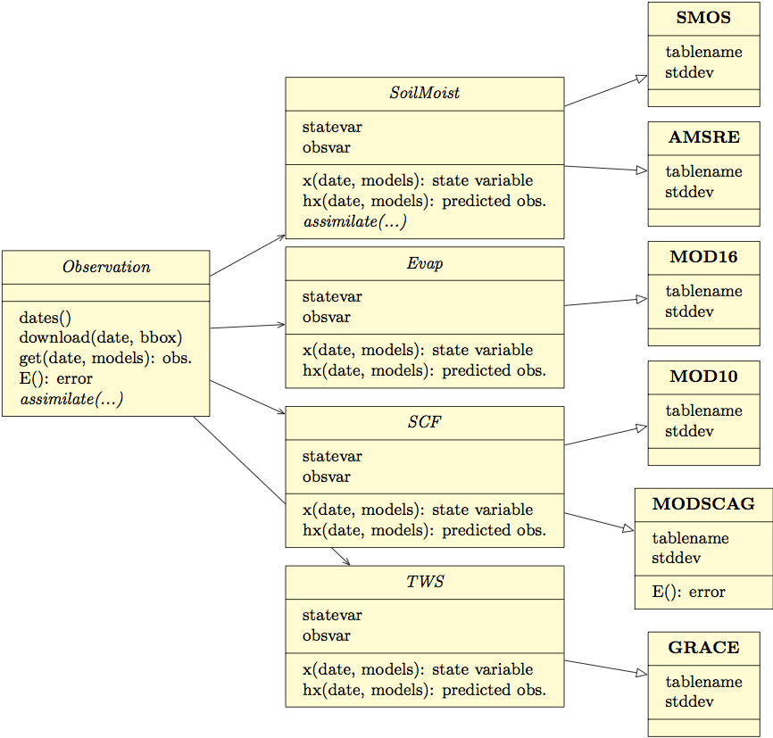

Regional Hydrological Extremes Assessment System
NASA/JPL Software of the Year Award
Kostas Andreadis
Motivation
- Water resources management is a major challenge globally
- Information is often derived from datasets being offered to end users by data producers
- rather than users running their own product-generating systems
- Customizations would be too expensive for users
Still complicated!
RHEAS
- Need for software that can
- "curate" datasets for hydrological information and automate download
- deploy simulations with minimal configuration
- exploit available information (i.e. data assimilation)
- deliver data in a GIS format
- be a cost effective solution
- Scientists are not trained in software engineering!
System architecture
Database
PostgreSQL/PostGIS
- Object-oriented design
- Allows for code reuse
- Easy to extend functionality

Metaprogramming
from decorators import http, geotiff
@geotiff
@http
def fetch(dbname, dt, bbox):
"""Downloads CHIRPS rainfall data from the data server."""
url = "ftp://... chirps-v2.0.{0:04d}.{1:02d}.{2:02d}.tif.gz"
return url, bbox, dt
Focus on ease of use
Downloading datasets
[domain] minlat: 2 maxlat: -2 minlon: 30 maxlon: 34 [trmm] [iri] startdate: 2000-2-1 enddate: 2000-3-1 [chirps] startdate: 2014-1-3
Running a hydrologic simulation
[nowcast] model: vic startdate: 2003-1-1 enddate: 2003-3-31 basin: data/tests/basin.shp name: basin resolution: 0.25 [vic] precip: chirps temperature: ncep wind: ncep initialize: yes save to: db save: net_short, soil_moist
Sample products
Corn yield map over Kenya
Integration with Github services
Issue tracker

Documentation
Cultivating knowledge
As a scientist at the Ethiopian Institute of Agriculture Research, Degefie Tibebe… "We were very impressed," he said, "RHEAS integrates satellite products to simulate extreme events. Drought is one of the extreme events that affects Ethiopia repeatedly."
Stakeholder involvement
Dr. Nguyen Tung Phong, the Deputy Director of VAWR said, "I expect that systems like RHEAS will help the academy towards improving their skills in drought monitoring and forecasting efficiently, accurately, and timely." He projected that the system would help provinces as well as the Department of Agriculture and Rural Development to respond to and take effective measures in a much quicker and efficient manner.
Outreach and training